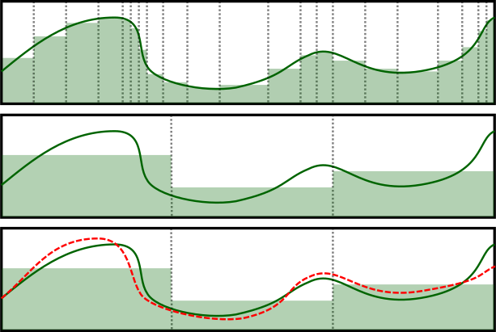
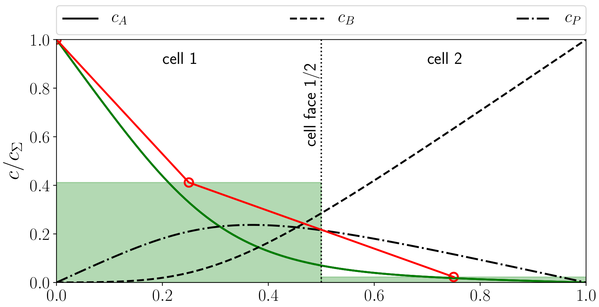
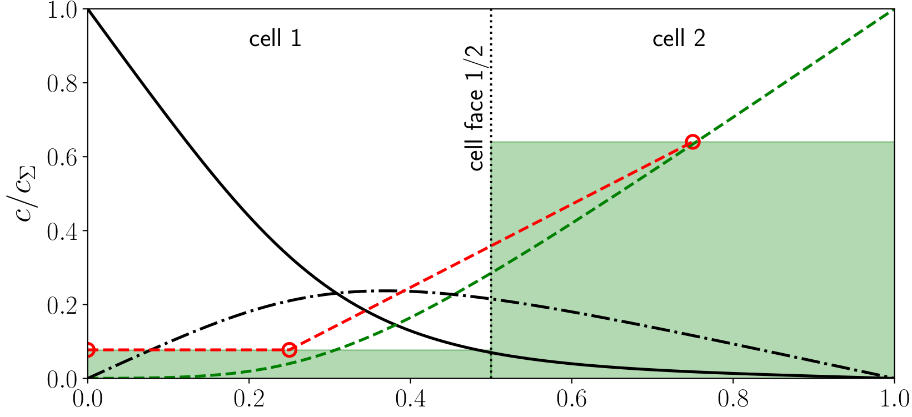
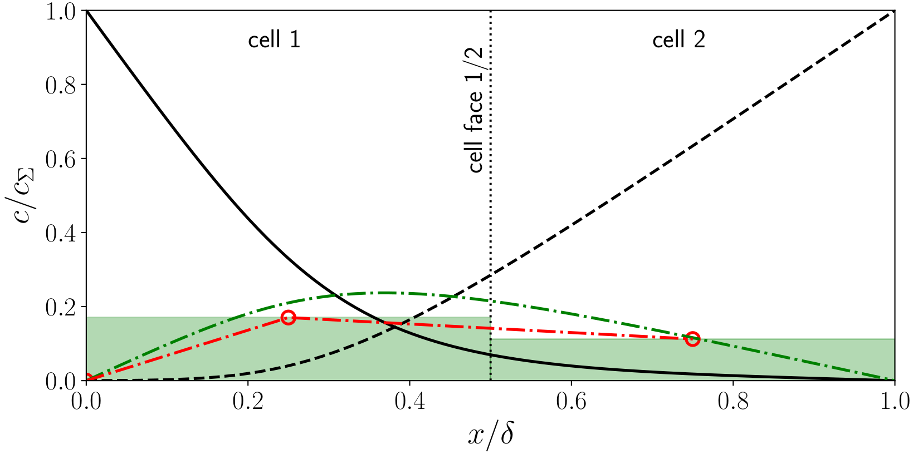
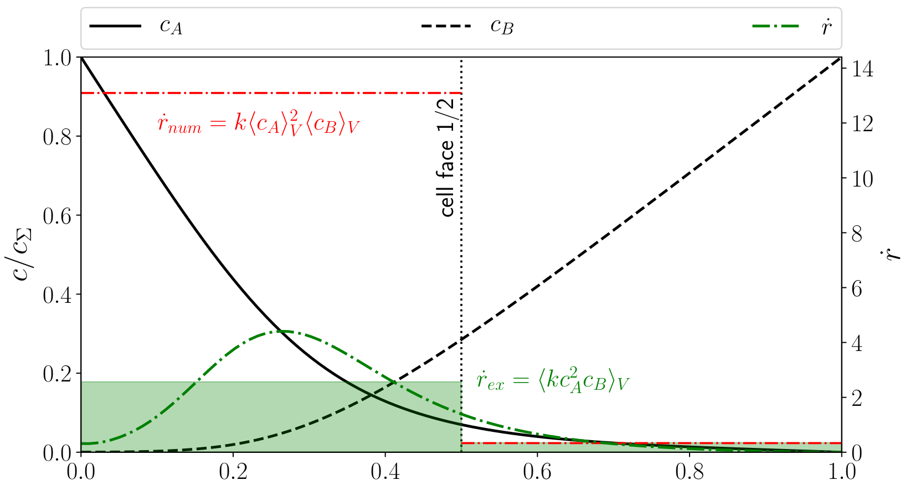
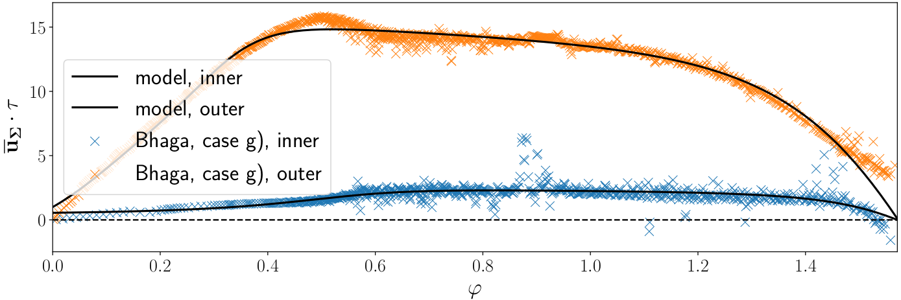
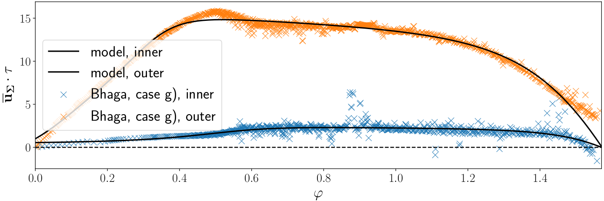

Convection-dominated concentration boundary layers & chemical reactions at rising bubbles
Andre Weiner & Dieter Bothe
Slides available at: andreweiner.github.io/reveal.js/spp1740_annual_meeting_2019.html
Outline
- Recent activities
- Sustainable research
- Subgrid-scale modeling
- Model validation
- Air bubbles rising in water
- Outlook and summary
Recent activities
- OpenFOAM® workshop
- Sustainable research
- Internal workshop (MMA): An introduction to Docker® and its role in sustainable research
- Current results: Github
Sustainable research
Chris Olah, Shan Carter: Research debt
DOI: 10.23915/distill.00005
Making results reproducible
Version control (I)
Version control (II)

Virtualization


Compatibility
- Linux kernel 3.10+ (30th June 2013)
- Docker engine
- Initial release: 0.1.0 (23rd March 2013)
- Compatibility break: 1.10 (4th Febuary 2016)
- Current release: 19.03.01 (25th July 2019)
High-fidelity data storage
Subgrid-scale modeling
Typical simulation scenario

Reaction:
$2A + B \rightarrow P$
$\dot{r} = kc_A^2c_B$
- $A$ - transfer species
- $B$ - bulk species
- $P$ - product species
Image: C. Pesci, A. Weiner, H. Marschall, D.Bothe; J. Fluid Mech. (2018)
Transfer species (A)
Bulk species (B)
Product species (P)
Reaction term
Data-driven profile reconstruction
Further information: A. Weiner, D. Hillenbrand, H. Marschall, D.Bothe; CET (2019)
Idea: 2D→1D setting

$\partial_\tau c = -\partial_n u_n|_\Sigma \partial_n c + D\partial_{nn}c + f_t (n,u_t,...)$
Idea based on D. Gründing, D. Bothe; Int. J. Heat Mass Tranf. (2016) and B. Aboulhasanzadeh, S. Thomas, M. Taeibi-Rahni, G. Tryggvason; CES (2012)
SGS modeling for experiments?

Image: A. Weiner, J. Timmermann, C. Pesci, J.Grewe, M. Hoffmann, M.Schlüter, D.Bothe; CES (2019)
Model assessment
How to obtain reference data for
- complex bubble shapes and
- dynamic shape deformation
locally and globally?
Dilemma
Volume of Fluid
- strong deformations
- low computational cost
- low accuracy
Interface Tracking
- small deformations
- high computational cost
- high accuracy

Image: A. Weiner, J. Timmermann, C. Pesci, J.Grewe, M. Hoffmann, M.Schlüter, D.Bothe
Decoupling of two phase flow and species transport
- Two-phase flow simulation (VoF)
- Extraction and approximation of shape and boundary conditions (machine learning)
- Single phase solution (liquid) of momentum and species transport
Two phase flow simulation

Shape and BC
 

Single phase solution

Extension to 4D

First impression
Air bubbles rising in water
Terminal velocity
Velocity distribution

Some statistics

Summary and outlook
- concept for conserving and publishing results ✔
- high-$Pe$ number problem (boundary layer) ✔
- SGS modeling for 1st order reaction ✔
- SGS modeling for selective reactions (✔)
- Validation with complex and dynamic interfaces (✔)
- PhD thesis (✔)
THE END
Thank you for your attention!
Get in touch: weiner@mma.tu-darmstadt.de
Time for discussion ...